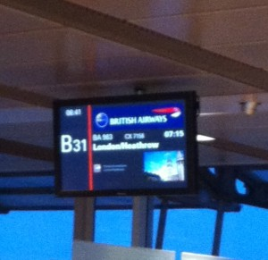

Mrs. Paperless is organizing San Francisco
Meine Reise beginnt
Gestern noch hatte ich mir vorgestellt, mal eben schnell meinen Koffer zu packen…aber so einfach sollten mir meine tausend Gedanken das nicht machen. Besonders wir Frauen kennen das: Wieviele Paar Schuhe brauche ich wohl? Was ziehe ich tagsüber an, was am Abend? Benötige ich Kleidung für unterschiedliches Wetter? An dieser Stelle sei angemerkt, dass ich natürlich vorab den Wettertrend für San Francisco abgefragt hatte, die letzte Frage war also schnell mit Nein beantwortet, denn es wird nur sonnig werden.
Während meiner Packarie führte ich mir schnell vor Augen, wie ich als Professional Organizer normalerweise auch hierbei vorgehen sollte. Das Ergebnis war ein schnell gepackter Koffer, die Kleidung nach pragmatischen Gesichtspunkten gewählt und wer braucht für eine Woche schon mehr als drei Paar Schuhe? Ich hielt mich an einen Pack-Tipp: sich jeden Tag als ein Event vorzustellen und für jeden Tag ein Outfit einzupacken. Das beschleunigte die Entscheidungsfindung ungemein. Was ich aber auf jeden Fall dabei habe, ist mein Dirndl. Ja, Sie lesen richtig. Mehr dazu werde ich in den folgenden Tagen berichten.
Für mich als Selbstständige ohne Sekretariat war ebenfalls wichtig, noch alle Mails und Kundenfragen beantwortet zu haben und mein technisches, papierloses Equipment für den Überseeaufenthalt eingerichtet zu haben. Natürlich kann ich beim Thema „Ausweispapiere, Flugticket, Einreiseerlaubnis, Kreditkarten, Bargeld, Reiseführer“ meine Idee des papierlosen Profialltags noch nicht zu 100 Prozent umsetzen. Aber außer Pass, Kreditkarten und Bargeld geht es schon papierlos. Dazu später mehr.
Heute Morgen, 07:15 Uhr am Gate, Flughafen Hamburg
Die Maschine fliegt pünktlich ab, ich schwanke zwischen Müdigkeit und Aufregung. Obwohl dies ja nicht meine erste weite Reise sein wird, dennoch aber die erste Reise als Mrs. Paperless an die Westküste der USA.
Meine Kamera wird mich begleiten und viele Eindrücke festhalten.
Nun liegen viele Stunden Flug vor mir – ab morgen berichte ich weiter von mir als „Mrs. Paperless is organizing San Francisco“ und freue mich auf viele eindrucksvolle Momente!

Weitere Artikel

Gar nicht lean ist auch mal gut
Das schlanke, entschlackte, effiziente Büro ist meine Leidenschaft. Doch vor einiger Zeit habe ich erfahren, dass es manchmal gut ist, nicht lean zu sein, nicht auf die „schlanke Linie“ zu achten. Ich war eingeladen, einen …

Checkliste Reisen und Arbeiten
Immer wieder habe ich gemerkt, dass auf Reisen generell zu viel einpacke, dafür aber wichtige Kleinigkeiten, die das Leben wirklich leichter machen, gern mal vergesse. Da ich immer mehr Arbeiten und Reisen verbinde, kann das …